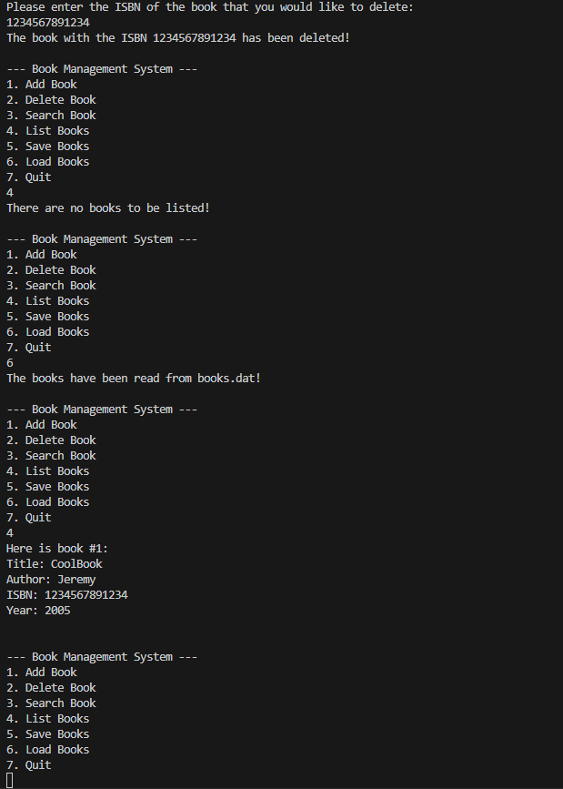

This was our final project for our C course, a book management system. It was a challenge to do at first, but in the end it was simply putting concepts we already had together. There were some OOP aspects as we had to have a header file, as well as the book being a separate class from the main. We also had to dynamically allocate an array to accommodate a fluctuating amount of books, and save and load said books to and from dat files. It was an enjoyable challenge, and learning how to dynamically allocate arrays and to save to external files were important skills that I have since applied in other projects.